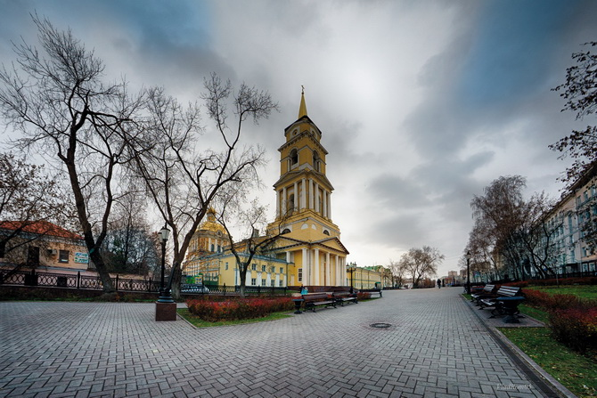

7. Спасо-Преображенский собор
Соборная площадь, начало Комсомольского проспекта · Найти на Яндекс Картах

История места
Спасо-Преображенский собор и его колокольня стали заметными архитектурными ориентирами Перми. Комплекс формировался в конце XVIII — первой половине XIX века, когда город развивался как губернский центр.
В его создании участвовали несколько архитекторов, в том числе Иван Свиязев. С площади можно рассмотреть, как положение собора над Камой связывает архитектуру с рельефом и панорамой города.
Значение для Перми и России
Собор представляет этап формирования архитектурной индивидуальности Перми. Его значение связано с историей местной архитектуры и участием города в культурной жизни России.